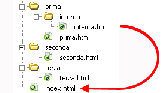

HTML, acronimo di "HyperText Markup Language" (Linguaggio di Markup per l'IperTesto), è il linguaggio di markup standard utilizzato per creare e strutturare contenuti su pagine web.
Un linguaggio di markup è un sistema di annotazione testuale utilizzato per definire la struttura, la formattazione e, talvolta, il comportamento di un documento.
HTML funziona attraverso l'uso di tag, che sono elementi del linguaggio racchiusi tra parentesi angolari < >. Ogni tag fornisce un'indicazione sulla struttura o la funzione di un elemento all'interno della pagina web. Ad esempio, il tag <h1> viene utilizzato per creare un titolo di primo livello (heading 1), il tag <p> per creare un paragrafo di testo, il tag <a> per creare un collegamento ipertestuale (link), e così via.
HTML è spesso accompagnato da CSS (Cascading Style Sheets) per gestire l'aspetto visivo della pagina e da JavaScript per aggiungere interattività e funzionalità dinamiche. Insieme, HTML, CSS e JavaScript costituiscono la base fondamentale per la creazione e lo sviluppo di pagine web moderne.
Il CSS e lo JavaScript li vedremo in futuro. Per adesso ci concentriamo sull'uso di HTML
I tag d'apertura e di chiusura
Un elemento è di solito racchiuso in un tag di apertura e un tag di chiusura che hanno una sintassi del genere:
<nome_elemento> contenuto </nome_elemento>
Però, ci sono altri elementi che non hanno un tag di chiusura, come ad esempio <img> <meta> <link> <input> <br>
Questi elementi sono detti elementi vuoti (void element).
Gli attributi
Gli attributi sono elementi utilizzati per fornire informazioni aggiuntive o configurare specifiche caratteristiche di un elemento. Gli attributi forniscono istruzioni dettagliate su come un elemento dovrebbe essere visualizzato, comportarsi o interagire con altri elementi. Sono solitamente definiti all'interno dei tag di apertura degli elementi utilizzando la sintassi "nome dell'attributo"="valore dell'attributo".
I principali tag da usare
Per strutturare una semplice pagina web bisogna essere a conoscenza di alcuni tag fondamentali.
<!DOCTYPE html> (abbreviazione di document type) è una dichiarazione utilizzata all'inizio di un documento HTML per specificare il tipo di documento e la versione di HTML che il browser dovrebbe utilizzare per interpretarlo correttamente. Questa dichiarazione informa il browser che il documento è scritto in HTML5 e il browser quindi renderà la pagina utilizzando le regole e le funzionalità specifiche di HTML5.
Questa dichiarazione è insensibile alle maiuscole. Quindi andrebbero bene anche dichiarazione del genere:
<!dOcTyPe html> <!doctype html>
<html> è il tag radice che apre la pagina web e dopo il quale tag di chiusura non va messo nient'altro. Può essere usato con il lang attributo che specifica la lingua principale della pagina.
<head> è il tag che apre la head section, che non appare nel browser, ma può contiene informazioni riguardo i documenti HTML, fogli di stile esterno, vari script di JavaScript e il titolo della pagina.
<meta> Fornisce al browser alcune informazioni di base sul documento. Per fornire queste informazioni si usano gli attributi, ad esempio l'attributo charset dichiara la codifica dei caratteri. I documenti HTML moderni dovrebbero sempre utilizzare UTF-8, anche se non è un requisito. In HTML, il tag "meta" non richiede un tag di chiusura.
<title> Il titolo della pagina. Il testo scritto tra questo tag di apertura e il tag di chiusura verrà visualizzato sulla scheda della pagina o nella barra del titolo del browser.
<body> Apre la parte del documento visualizzata dagli utenti, ovvero tutto il contenuto visibile o udibile di una pagina. Nessun contenuto dovrebbe essere aggiunto dopo il tag di chiusura </body>.
<h1> un intestazione di primo livello per la pagina (dopo vedremo altri tipi)
<p> un paragrafo di testo
Scrivere codice come testo in un file HTML
Prima di scoprire tutti i tag capiamo come si può scrivere in modo facile del codice all'interno della pagina senza farla interpretare dal browser.
Nel caso dobbiamo far vedere nella pagina web più spazi (il browser interpreta solo il primo spazio, e quelli successivi li ignora) oppure proprio la scrittura del codice, ma viene interpretato dal browser come parte del codice stesso, possiamo usare vari metodi:
Usare i caratteri speciali
Scrivere i caratteri speciali in codice HTML: sostituire i caratteri speciali che vengono interpretati come codice, in altri modi, seguendo queste traduzioni (fai finta che i caratteri non sono divisi da spazi)
lo spazio => & n b s p ;
" => & q u o t ;
< => & l t ;
> => & g t ;
- => & n d a s h ;
ad esempio per scrivere il codice di un paragrafo facciamo così:
<p>Paragrafo a caso</p>
Il codice lo metto in corsivo per distinguerlo meglio.
Scrivere il codice all'interno del tag <textarea>. É l'opzione più comoda
usiamo inoltre 4 attributi associati al textarea
name = definiamo il nome della’aerea di testo.
readonly = con valore readonly gli abbiamo detto che deve essere di sola lettura, se lo omettiamo diventerà un aria di testo con possibilità di scrittura.
cols = con valore numerico gli stiamo specificando la larghezza visibile dell’area di testo.
rows = con valore numerico gli specifichiamo il numero visibile di linee dell’area di testo.
Inoltre usiamo in CSS (vedrai più avanti cos'è) la proprietà e il valore "resize: none;" per non poterlo ridimensionare.
Ora possiamo studiare i diversi tipi di tag.
Le intestazioni
HTML fornisce non solo semplici tag di paragrafo, ma anche sei tag di intestazione separati per indicare titoli di diverse dimensioni e spessori. Enumerati come titolo 1 fino a titolo 6, il titolo 1 ha il testo più grande e spesso, mentre il titolo 6 è il più piccolo e sottile, arrivando al livello del paragrafo.
<h1> definisce la più importante intestazione.
<h6> definisce la meno importante intestazione.
Intestazione di primo tipo
Intestazione di secondo tipo
Intestazione di terzo tipo
Intestazione di quarto tipo
Intestazione di quinto tipo
Intestazione di sesto tipo
I paragrafi
I paragrafi sono il più basico HTML elemento. Sono usati per scrivere del testo nella pagina ma, vengono ignorati qualsiasi spazio extra dopo il primo, e anche le linee extra che vengono visualizzate dal browser come un solo semplice spazio. Per questo motivo, insieme al tag <p> si usa anche i tag <br> e <pre>
Il tag <pre> in HTML viene utilizzato per definire un blocco di testo preformattato, il che significa che il testo all'interno di questo tag viene visualizzato esattamente come è stato inserito nel codice, inclusi gli spazi, le righe vuote
Questo è un blocco di testo preformattato.
Qui puoi inserire spazi e ritorni a capo
senza che il browser li ignori.
Nonostante ciò non si possono inserire i simboli di HTML.
Questo è un esempio di tag HTML all'interno del tag pre.
Invece il tag <br> consente di mandare a capo del testo o un altro elemento, restando all'interno dello stesso tag.
Questo è il primo rigo
Questo è il secondo rigo
Questo è il terzo rigo
Formattazione del testo
Mentre la maggior parte dei tag HTML viene utilizzata per creare elementi, l'HTML fornisce anche tag di formattazione nel testo per applicare stili specifici legati al testo a porzioni di testo. Questo argomento include esempi di formattazione del testo in HTML come l'evidenziazione, il grassetto, il sottolineato, il pedice e il testo barrato.
testo evidenziato (il colore si può modificare in CSS)
grassetto di primo tipo grassetto di secondo tipo corsivo di primo tipo corsivo di secondo tipo
testo sottolineato di primo tipo (testo inserito)
testo sottolineato di secondo tipo
abbreviazione (se passi il puntatore vicino vedrai il testo non abbreviato)
testo barrato di primo tipo (testo cancellato) testo barrato di secondo tipo testo in pedice: esempio baseesponente => 53 testo in apice: esempio=> baseapice => F1
Alcuni tag sembrano non avere differenze, ma in realtà c'è una differenza semantica.
"b" e "strong": "strong" viene utilizzato per indicare che il testo è fondamentalmente o semanticamente importante rispetto al testo circostante, mentre "b" non indica tale importanza e rappresenta semplicemente del testo che dovrebbe essere reso in grassetto.
"i" e "em": "em" viene utilizzato per indicare che il testo dovrebbe avere un'enfasi aggiuntiva che deve essere evidenziata, mentre "i" rappresenta semplicemente del testo che dovrebbe essere separato dal testo normale circostante.
"u" e "ins": "u" viene usato per sottolineare del testo e dargli importanza. "ins" viene usato per evidenziare del testo recentemente inserito (utile nei lavori di gruppo su siti web)
"del" e "s": "s" viene usato per barrare un testo e dargli meno importanza. "del" viene usato per evidenziare del testo recentemente eliminato (utile nei lavori di gruppo su siti web)
Classi e id
Le classi e gli ID semplificano il riferimento agli elementi HTML da script e fogli di stile. L'attributo class può essere utilizzato su uno o più tag ed è utilizzato da CSS per lo stile. Gli ID, invece, sono destinati a riferirsi a un singolo elemento, il che significa che lo stesso ID non dovrebbe mai essere utilizzato due volte. Gli ID sono generalmente utilizzati con JavaScript e collegamenti interni al documento, e sono sconsigliati in CSS.
Classi
Le classi sono identificatori per gli elementi a cui vengono assegnate. Utilizza l'attributo class per assegnare una classe a un elemento.
Per assegnare più classi a un elemento, separa i nomi delle classi con spazi.
Id
L'attributo ID di un elemento è un identificatore che deve essere unico nell'intero documento. Il suo scopo è quello di identificare univocamente l'elemento durante il collegamento (utilizzando un ancoraggio), la scrittura di script o lo styling (con CSS).
Per capire come usare le class e gli id in CSS vedi qui
I valori accettati per una classe o un id (per HTML5 o superiori)
Le caratteristiche accettate per una classe o un id sono
1. Non deve contenere spazi.
2. Deve contenere almeno un carattere.
Il valore può essere composto da cifre, da una singola cifra, da caratteri di punteggiatura, da caratteri speciali o qualsiasi altra cosa, ad eccezione degli spazi. Ecco degli esempi validi:
Questo invece è invalido:
I collegamenti ipertestuali
I collegamenti ipertestuali sono comunemente utilizzati per collegare pagine web separate, ma possono anche essere utilizzati per collegare tra diversi punti in un singolo documento, spesso all'interno di una tabella dei contenuti o addirittura per avviare applicazioni esterne. Questo argomento spiega l'implementazione e l'applicazione dei tag anchor HTML in vari contesti.
Questi collegamenti si effettuano con il tag <a> e con l'attributo href (hypertext reference)
Specifichiamo gli attributi utili nel tag a
href: Specifica l'indirizzo di destinazione. Può essere un URL assoluto o relativo, oppure il nome di un ancoraggio . Un URL assoluto è l'URL completo di un sito web, come ad esempio http://example.com/. Un URL relativo punta a un'altra directory e/o a un documento all'interno dello stesso sito web, ad esempio /about-us/ punta alla directory "about-us" all'interno della directory radice (/). Quando si punta a un'altra directory senza specificare esplicitamente il documento, i server web restituiscono tipicamente il documento "index.html" all'interno di quella directory.
hreflang: Specifica la lingua della risorsa collegata dall'attributo href (che deve essere presente con questo attributo). Utilizzare i valori linguistici da qui Treccani
rel: Specifica la relazione tra il documento corrente e il documento collegato. Per HTML5, i valori devono essere definiti nella specifica.
title: Specifica informazioni aggiuntive su un collegamento. Le informazioni vengono spesso visualizzate come testo di suggerimento quando il cursore si sposta sopra il collegamento. Questo attributo non è limitato ai collegamenti, può essere utilizzato su quasi tutti i tag HTML.
Treccani
download: Specifica che il bersaglio verrà scaricato quando un utente fa clic sul collegamento ipertestuale. Il valore dell'attributo sarà il nome del file scaricato. Non ci sono restrizioni sui valori consentiti e il browser rileverà automaticamente l'estensione del file corretta e la aggiungerà al file (.img, .pdf, ecc.). Se il valore viene omesso, verrà utilizzato il nome del file originale.
scarica qui
target: Specifica dove aprire il collegamento, ad esempio in una nuova scheda o finestra. I valori possibili sono _blank, _self, _parent, _top e nome del frame (deprecato, ossia indica che è considerato obsoleto, non ottimale o non raccomandato per l'uso futuro.). L'uso di questo attributo potrebbe danneggiare la sicurezza del sito,
Vediamo il significato dei vari valori
_self: Questo è il valore predefinito. Quando un utente fa clic sul collegamento, la nuova risorsa viene aperta nello stesso tab o finestra in cui si trova la pagina corrente.
_blank: Quando un utente fa clic sul collegamento, la nuova risorsa viene aperta in una nuova finestra o tab del browser.
Pericolo di sicurezza: Utilizzare `target="_blank"` concede al sito che ha aperto la finestra un accesso parziale all'oggetto `window.opener` tramite JavaScript, consentendo a quella pagina di accedere e modificare `window.opener.location` della tua pagina e potenzialmente reindirizzare gli utenti a siti dannosi o di phishing.
Ogni volta che utilizzi questa opzione per pagine che non controlli, aggiungi `rel="noopener"` al tuo collegamento per impedire che l'oggetto `window.opener` venga inviato con la richiesta.
Attualmente, Firefox non supporta `noopener`, quindi dovrai utilizzare `rel="noopener noreferrer"` per ottenere il massimo effetto.
_parent: Se la pagina corrente è all'interno di un frame o di un iframe, la nuova risorsa verrà aperta nel frame genitore, se disponibile. Se la pagina non è all'interno di un frame, questo comportamento sarà simile all'apertura nel contesto _self.
_top: Se la pagina corrente è all'interno di un frame o di un iframe, la nuova risorsa verrà aperta nella finestra principale del browser, sostituendo tutti i frame. Se la pagina non è all'interno di un frame, questo comportamento sarà simile all'apertura nel contesto _self.
nome del frame: È possibile specificare il nome di un frame o di un iframe esistente come valore per l'attributo target. In questo caso, la nuova risorsa verrà aperta nel frame specificato. Quest'opzione non è molto sicura.
Frame e Iframe
Dopo aver capito questo, vediamo di preciso cos'è un frame.
I frame e gli iframe sono entrambi elementi in HTML utilizzati per suddividere una pagina web in diverse sezioni o aree che possono contenere contenuti diversi. Tuttavia, hanno scopi e utilizzi leggermente diversi:
Frame:
I frame sono stati introdotti nelle prime versioni di HTML e sono stati utilizzati per creare layout complessi suddividendo una pagina in più sezioni rettangolari, ciascuna delle quali può contenere un documento HTML separato. I frame consentono agli sviluppatori di visualizzare più documenti HTML in una singola pagina web, dividendo l'area di visualizzazione in più parti. Tuttavia, a causa di problemi di usabilità, di accessibilità e di difficoltà nel gestire i contenuti, l'uso dei frame è ampiamente sconsigliato e non è supportato in HTML5.
Esempio di utilizzo dei frame (sconsigliato):
iFrame (Inline Frame):
Gli iframe, d'altra parte, sono un elemento più moderno e flessibile introdotto con HTML 4.0. Gli iframe sono utilizzati per incorporare un documento HTML all'interno di un altro documento HTML. Possono essere utili per incorporare contenuti di terze parti come video, mappe, widget o qualsiasi altra risorsa Web all'interno di una pagina.
Gli iframe sono molto più flessibili rispetto ai frame tradizionali, ma possono ancora presentare sfide per l'accessibilità, la sicurezza e il layout responsivo. Gli sviluppatori dovrebbero prestare attenzione all'uso degli iframe e considerare le migliori pratiche per garantire un'esperienza utente positiva.
Esempio di utilizzo di un iframe:
In generale, è preferibile evitare l'uso dei frame e degli iframe, specialmente quando ci sono alternative più moderne come l'utilizzo di CSS per la disposizione dei layout, l'uso di componenti di inclusione come Server-Side Includes (SSI) o lo sviluppo di applicazioni Web più interattive utilizzando tecnologie front-end come JavaScript e Ajax.
Percorsi assoluti e relativi
Per collegare un elemento in locale o sul web si usano i percorsi relativi o assoluti, che servono a muoverci tra le cartelle.
I percorsi assoluti e relativi sono termini utilizzati per descrivere come le risorse, come file o URL, vengono riferite e localizzate all'interno di un sistema di file o di un contesto web. Sia i percorsi assoluti che quelli relativi sono utilizzati per individuare la posizione di una risorsa all'interno di una struttura di directory.
PERCORSO ASSOLUTO:
Un percorso assoluto specifica il percorso completo di una risorsa dall'inizio della gerarchia di directory o dalla radice del dominio web. In un sistema di file, il percorso assoluto includerebbe ogni directory nella gerarchia, dall'unità o dalla radice in cui si trova il file fino alla posizione del file stesso. In un contesto web, il percorso assoluto sarebbe l'URL completo, comprensivo del protocollo (http, https) e del dominio.
Esempio di percorso assoluto in un sistema di file:
C:\Documenti\Progetto\index.html
Esempio di percorso assoluto in un contesto web:
https://www.example.com/pagine/index.html
PERCORSO RELATIVO:
Un percorso relativo, d'altra parte, specifica la posizione di una risorsa in relazione alla posizione del file o dell'URL di riferimento. In altre parole, un percorso relativo indica come raggiungere una risorsa partendo dalla posizione attuale. I percorsi relativi sono spesso utilizzati quando si fa riferimento a risorse all'interno della stessa directory o delle sue sottodirectory.
Ci sono 3 casi per i percorsi relativi:
Percorso Relativo Senza Cambiamenti di Directory:
In questo caso, il percorso relativo specifica semplicemente il nome del file o della risorsa da raggiungere, senza dover cambiare alcuna directory.
Esempio:
href="filedellastessacartella.html"
il caso in cui i file partono da una directory superiore fino ad arrivare a quella inferiore
dobbiamo usare la sintassi
href="prima sottocartella/seconda sottocartella/altre sottocartelle/file da collegare.html"
in quest'esempio il valore di href per collegare il file interna.html sarebbe href="prima/interna/interna.html"
il caso in cui i file partono da una directory inferiore fino ad arrivare a quella superiore
in questo caso la sintassi è tot 2 punti quanti sono i livelli da "scalare", separati da /, e poi il file da collegare:
href="../file da collegare.html"
in questo esempio salgo di 1 livello per collegare il file

nell'esempio della foto si deve salire di 2 livelli => href="../../index.html"
In definitiva, i percorsi assoluti sono completi e iniziano dalla radice, mentre i percorsi relativi sono basati sulla posizione attuale e possono includere cambiamenti di directory. I percorsi relativi sono spesso più flessibili e portabili, in quanto non dipendono dalla struttura completa del sistema di file o dell'URL. La scelta tra i due dipenderà dal contesto in cui si sta lavorando.
Quando si ha un hosting web disponibile (il servizio che permette di mettere online un sito web), i vari file html si inseriscono in varie cartelle o nella stessa cartella di un server a seconda di come sono indirizzati i link.
I nomi dei file html sono personalizzabili, ma di solito la homepage ha sempre il nome di index.html
esempio link al file della homepage
Il link al file in questo caso è un percorso assoluto, che quasi sicuramente non andrà, perché sarà cambiata la posizione del file.
Come linkare i vari collegamenti
Link esterni
Dunque con il tag "a" possiamo linkare website esterni o pagine dello stesso website.
Nel caso di un sito web esterno è giusto denotare che il link è esterno con l'attributo "rel" e il valore "external"
Puoi collegarti a un sito che utilizza un protocollo diverso da HTTP. Ad esempio, per collegarti a un sito FTP, puoi fare così:
Questo potrebbe essere un collegamento a un sito FTP
In questo caso, la differenza è che questo tag di ancoraggio sta richiedendo al browser dell'utente di connettersi a example.com utilizzando il protocollo di trasferimento file (FTP) anziché il protocollo di trasferimento ipertestuale (HTTP).
Studia meglio il protocollo FTP e come funziona
Link a un ancora (id)
Gli ancoraggi possono essere utilizzati per passare a tag specifici all'interno di una pagina HTML. Il tag `a` può puntare a qualsiasi elemento che abbia un attributo id grazie al simbolo #. Gli ancoraggi vengono principalmente utilizzati per passare a una sottosezione di una pagina e vengono usati in combinazione con i tag di intestazione.
Facciamo un esempio con questa pagina stessa e con i tag di intestazione precedenti
Se il valore dell'attributo href inizia con "tel:" il tuo dispositivo comporrà il numero quando ci fai clic. Questo funziona su dispositivi mobili o su computer/tablet che eseguono software - come Skype o FaceTime - in grado di effettuare chiamate telefoniche.
Non tutte le opzioni specificate dopo l'indirizzo del destinatario sono supportate in tutti i client di posta elettronica.
Link che esegue una funzione JavaScript
Possiamo usare i tag "a" anche per eseguire una funzione in JavaScript, tramite il protocollo "javascript:"
Per come fare una funzione JavaScript lo vedremo in futuro. La funzione che avvieremo farà in modo di aggiungere un paragrafo con scritto questo è il paragrafo n. Il paragrafo verrà aggiunto dopo il link che lo avvia
Il `return false;` è necessario per evitare che la tua pagina scorra verso l'alto quando viene fatto clic sul collegamento a "". Assicurati di includere tutto il codice che desideri eseguire prima di esso, poiché il ritorno interromperà l'esecuzione del codice ulteriore.
Anche degno di nota, puoi includere un punto esclamativo ! dopo il cancelletto per evitare che la pagina scorra verso l'alto. Questo funziona perché qualsiasi slug non valido farà sì che il collegamento non scorrerà in nessun punto della pagina, poiché non riesce a individuare l'elemento a cui fa riferimento (un elemento con id="!"). Potresti anche utilizzare qualsiasi slug non valido (come #scrollsNowhere) per ottenere lo stesso effetto. In questo caso, `return false;` non è richiesto.
Dovresti usare qualcosa di tutto ciò?
La risposta è quasi certamente no. Eseguire JavaScript inline con l'elemento in questo modo è piuttosto una pratica non ottimale. Considera di utilizzare soluzioni JavaScript pure che cercano l'elemento nella pagina e associano una funzione ad esso invece di farlo in questo modo.
Considera anche se questo elemento sia veramente un pulsante invece di un collegamento. In tal caso, dovresti utilizzare `button`
Elenchi
HTML offre tre modi per specificare elenchi: elenchi ordinati, elenchi non ordinati ed elenchi di definizione. Gli elenchi ordinati utilizzano sequenze ordinarie per indicare l'ordine degli elementi dell'elenco, gli elenchi non ordinati utilizzano un simbolo definito come un pallino per elencare gli elementi senza un ordine specifico, e gli elenchi di definizione utilizzano rientri per elencare gli elementi insieme ai loro sotto-punti.
Elenco non numerato
sei
popo
un
grande
Elenco ordinato
idiota
stronzo
Elenco ordinato al contrario
eh capit eh?
io non prendo nè la pensione nè la centoquattro
lista non numerata in una lista numerata
lista numerata
Inoltre esistono gli attributi personalizzabili, detti anche attributi data, che sono attributi HTML definiti dall'utente che non sono standard secondo le specifiche HTML ufficiali, ma sono utilizzati per archiviare dati personalizzati o per scopi specifici all'interno degli elementi HTML. Questi attributi iniziano con il prefisso "data-", seguito da un nome che può essere scelto liberamente dallo sviluppatore.
Gli attributi personalizzati sono molto utili quando vuoi associare dati aggiuntivi a elementi HTML senza doverli utilizzare per il comportamento o la presentazione predefiniti del browser. Questo può essere particolarmente utile quando si lavora con scripting JavaScript o quando si desidera memorizzare metadati aggiuntivi.
Ecco un esempio di come potresti utilizzare un attributo personalizzato:
In questo esempio, l'attributo personalizzato data-action è stato aggiunto a un pulsante. Questo attributo non ha alcun significato intrinseco per il browser, ma può essere utilizzato dal tuo script JavaScript per determinare quale azione eseguire quando il pulsante viene cliccato.
Nell'ambito del CSS, gli attributi personalizzati possono anche essere utilizzati in combinazione con i selettori di attributi per applicare stili specifici a elementi con attributi dati specifici:
Ricorda che, mentre gli attributi personalizzati sono ampiamente supportati nei moderni browser e possono essere molto utili, è importante utilizzarli con coerenza e con un significato chiaro, in modo che il codice rimanga leggibile e mantenibile nel tempo.
Questo é un esempio di inserimento testo! Inoltre ci sono anche vari attributi
Opzione 1
Opzione 2
Opzione 3
Opzione 4
Inoltre esiste anche un tag per gli input in multiriga, detto textarea, con il quale possiamo anche regolare la grandezza dell'inserimento testo dalla pagina web.
Abbiamo gli attributi:
rows per decidere quante righe debba essere alto (almeno inizialmente, prima che sia modificato nella pagina)
le righe di default sono 2
cols per decidere quante colonne debba essere lungo (almeno inizialmente, prima che sia modificato nella pagina)
le colonne di default sono 20
name per identificare un elemento HTML all'interno di un modulo o di una richiesta HTTP. Questo attributo consente di inviare dati al server in modo strutturato e prevedibile. (lo vedremo molto in futuro)
il tag textarea ha come suo valore interno al tag di apertura e di chiusura il valore che viene scritto di default nell'inserimento testo. Può essere modificato a piacere, a meno che non venga messo l'attributo readonly, che rende impossibile la modifica del testo.
attributi dei tag input
Gli attributi che si possono utilizzare in un tag `input` variano a seconda del tipo di input che si sta creando. Ecco alcuni degli attributi più comuni che vengono utilizzati con il tag `input`:
type: Specifica il tipo di input. Alcuni valori possibili sono "text" (per input di testo), "password" (per password), "email" (per indirizzo email), "number" (per numeri), "checkbox" (per caselle di controllo), "radio" (per input radio), ecc.
name: Definisce il nome dell'input, che verrà utilizzato per identificare l'input quando il modulo viene inviato. È importante avere nomi univoci per gli input all'interno di un modulo.
value: Di solito specifica il valore predefinito o iniziale dell'input. Ma se usato
placeholder: Fornisce un suggerimento o un esempio di ciò che dovrebbe essere inserito nell'input. Questo testo scompare quando l'utente inizia a digitare.
required: Indica se l'input è obbligatorio o meno. Se presente, l'utente deve fornire un valore prima di poter inviare il modulo.
disabled: Disabilita l'input, impedendo all'utente di interagire con esso.
readonly: Rende l'input di sola lettura, consentendo all'utente di visualizzare ma non modificare il suo valore.
max e min: Utilizzati con input di tipo "number", definiscono il valore massimo e minimo consentito.
step: Utilizzato con input di tipo "number", definisce l'incremento o il decremento del valore quando l'utente utilizza i controlli di incremento/decremento.
checked: Utilizzato con input di tipo "checkbox" e "radio", indica se l'input è selezionato per impostazione predefinita.
autocomplete: Specifica se il browser deve suggerire automaticamente valori per l'input basandosi sulla cronologia dell'utente.
size e maxlength: Utilizzati con input di tipo "text" o "password", definiscono la dimensione visuale dell'input e la lunghezza massima del testo inserito.
ti sono solo alcuni degli attributi che puoi utilizzare con il tag `input`. La scelta degli attributi dipende dal tipo di input che stai creando e dalle tue esigenze specifiche.
per indicare che un testo nel nostro file HTML è un indicazione di data o ora si utilizza il tag time (non cambia la forma della parola)
Rapporto missione
invece per indicare un indirizzo stradale si usa il tag address, che rende il testo in corsivo e manda a capo (in inglese italic)
il mio indirizzo di casa è: via fratelli Capocchia n 104
tag semantici
la maggior parte dei file semantici non modificano l'aspetto della pagina, ma possono essere utili per le CSS rule
il cuore ha le sue ragioni che la ragione non conosce
senz e te nu post stà, pcchè tu m'appartiennnnn, pcchè m piac tuuu
tras indo local, tutt Gucci e Ferragam, sold e fierr inde man
me pcciat o cor, ma poi t na vai e nu sacc ancor
sheeeeeeeeeeeeee
sheeeeeeeeeeeeee
me pcciat o cor, ma poi t na vai e nu sacc ancor
youporn
ACCESSIBILITÀ HTML
Per rendere accessibile le pagine web al maggior numero di utenti, dobbiamo ricordarci tecnologie di assistenza. Queste tecnologie sono usate da utenti con diversi dispositivi o con una connessione lenta, oppure con disabilità. Alcune di queste tecnologie di assistenza sono lettori di schermo (per i ciechi), dispositivi di zoom, ecc... Un modo per aiutare queste tecnologie, e quindi questi utenti, è usare un codice semantico HTML: al posto di usare i generici div e span, che non hanno alcun contesto, possiamo usare i tag semantici, come "h1" "ul" o "p". Infatti tramite questi tag semantici il lettore di schermo riesce a interpretare meglio gli elementi HTML.
Ecco alcune regole che si dovrebbero rispettare per una migliore accessibilità:
ci deve essere un ordine tra i titoli, dai più grandi ai più piccoli
ci deve essere un unico titolo "h1"
si deve usare il giusto tag per ogni scopo: il tag "a" per reindirizzare altre pagine, il tag "button" per compiere azioni
Altro modo per migliorare l'accessibilità è il WAI-ARIA. Il WAI-ARIA (Web Accessibility Initiative - Accessible Rich Internet Applications) è un insieme di specifiche sviluppate dal W3C (World Wide Web Consortium) per migliorare l'accessibilità dei contenuti Web per le persone con disabilità, in particolare per quelle che utilizzano tecnologie assistive come screen reader, tastiere, ecc.
Infatti nei casi in cui i tag semantici non sono abbastanza, possiamo usare diversi attributi del WAI-ARIA.
Il più importante di questi è l'attributo role:
L'attributo role viene utilizzato per fornire informazioni aggiuntive sull'identità o sulla funzione di un elemento HTML. In altre parole, l'attributo role viene utilizzato per specificare il ruolo semantico di un elemento all'interno della pagina.
L'attributo role può essere utilizzato su qualsiasi elemento HTML, ma è particolarmente utile per gli elementi non semantici, come ad esempio un div o un span.
Ecco un esempio di come utilizzare l'attributo role su un elemento HTML:
Click me
In questo esempio, l'attributo role viene utilizzato per indicare che l'elemento div ha il ruolo di pulsante. L'attributo aria-label viene utilizzato per fornire una descrizione testuale dell'elemento per gli utenti che utilizzano screen reader. L'attributo role può essere utilizzato in combinazione con altri attributi, come ad esempio aria-label, aria-labelledby, aria-describedby, aria-owns, aria-haspopup, aria-expanded, aria-selected, aria-checked, e molti altri ancora.
Facciamo alcuni esempi di role:
role="banner" => fa interpretare un elemento come l'intestazione della pagina.
Per far considerare al lettore di schermo vari elementi come un unico elemento, dobbiamo usare role al container di questi elementi, dando il valore del tag.
role="comment" => fa interpretare un elemento come una reazione a un certo contenuto.
role="contentinfo" => indica l'elemento come footer, ossia informazione del contenuto come il copyright
role="alert" => indica l'elemento come un avviso per eventi o cambiamenti nella pagina
Sui tag semantici non si deve usare l'attributo role, siccome è inutile e superfluo. Ricorda, tra un tag semantico e un attributo role, è meglio usare il tag semantico, siccome è più accessibile.
Altro attributo ARIA utile è aria-hidden.
aria-hidden: nasconde dal lettore di schermo elementi visivi superflui (non si deve inserire valore dell'attributo)
questo attributo non deve essere usato su elementi interattivi, come bottoni o link, perché non rende possibile per il lettore di schermo interagire con loro


{kind=link}